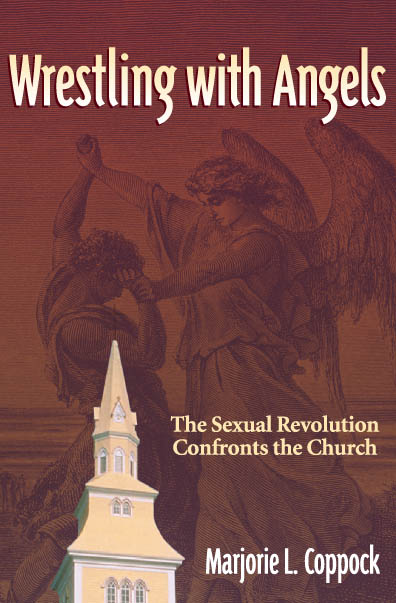

|

|
(Important Press Release!)
Vita - Marjorie L. Coppock (doc, PDF)
Permission is granted to individual readers to download the PDF file of the book onto their electronic reader at no cost.
(review table of contents)
(review introduction)
(image of entire book cover : front, binder, back)
(PDF of the book)
The sexual revolution in the United States was responsible for profound changes in sexual and family behaviors.
- How did the social and moral values and public legislation change so quickly
from support for stable family relationships to sexual license and family
dissolution?
- What influences encouraged or resisted these changes?
- What were the consequences for individuals and for society?
- How did these changes affect traditional religious values and practices?
At the end of the millenium, religious groups encountered political struggles
internally within their own organizations and within the larger society in
their support of traditional religious values.
"Wrestling With Angels" documents the challenges to traditional religious sexual
and family behaviors and describes responses to changes within Judeo/Christian
communities.
Marjorie L. Coppock contends that both the universities and religious organizations
need to engage in serious discussion and consideration in regard to changing sexual
behaviors and family patterns and the consequences of the directions in which we
are moving.
|
|
|
|
Praise for Wrestling With Angels
- "Wrestling With Angels is very helpful in its analysis of the impact
of the sexual revolution on our culture, particularly in its relation
to the church. It is a much needed study."
-Dr. D. James Kennedy
President, Coral Ridge Ministries
- "A major contribution to the study of the relationship between religion
and society. It provides a much needed perspective on this interface.
The chapters on family breakdown and the culture wars make it
particularly valuable for use in courses on marriage and the family."
-Dr. William Alex McIntosh
Professor of Sociology, Texas A&M University at College Station
- "Exactly what the world needs today, a concise examination told in a
compelling way that reminds us of our direction and purpose as the church."
-Rev. Bob Allen
Senior Pastor of Coker United Methodist Church, San Antonio, Texas
- "Eye-opening and thought provoking. It presents succinct research
documentation that provides another tool in support of marriage and
intact families. This book is both timely and needed. I plan to give it
as a wedding gift. It is a book that every Christian family should read
and discuss."
-Evelyn Townley, Executive Director
Wise Choices for Youth, San Antonio, Texas
- "A very well researched piece of work from which I learned a lot. The book
is chock full of interesting and useful information."
-Dr. Norval D. Glenn
Ashbel Smith Professor of Sociology and Stiles Professor of American Studies
University of Texas at Austin
- "A thorough and scholarly examination of the social and cultural impact
of the sexual revolution in the United States, particularly as it impacts
the church. It is a groundbreaking study that will be an essential source
in this discussion for some time to come."
-Dr. Clifford M. Black, Ph.D, C.C.S.
Professor of Sociology/Criminal Justice
United Methodist Clergy
|
Related essays:
- Life Beyond? Scientific Studies Address
Near Death Experiences (NDEs)
(doc, PDF)
- The Impact of Contemporary Family Life Patterns
on the Quality and Stability of Child Rearing (doc, PDF)
- Turning the Keys to Healthy and Loving Family Relationships (docx, PDF)
- Pornifying America: Rape of the Culture and What Can Be Done (PDF)
- Over the Rainbow : The Gay Battle for Social Reorganization of America (docx, PDF)
- The Con in Condom: Safe Sex! (Link to article)
- Abortion Divides the Nation (docx, PDF)
- AmeriNazification: The Doubling of the American Soul (docx, PDF)
- Bias and Error in the Death Penalty (docx, PDF)
- Euthanasia comes to the United States (docx, PDF)
- Torture- A matter of habit (docx, PDF)
- Eugenics - The Ethical Dilemma of Reproductive Technology (doc, PDF)
- Who's Rocking the Cradle? From Procreation to Production (doc, PDF)
- Author's Blog: Concerning This (http://concerningthis.blogspot.com/)
|